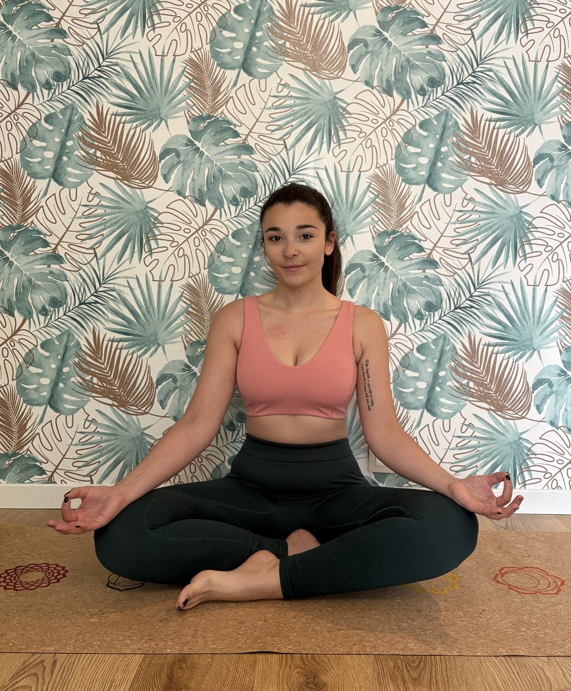
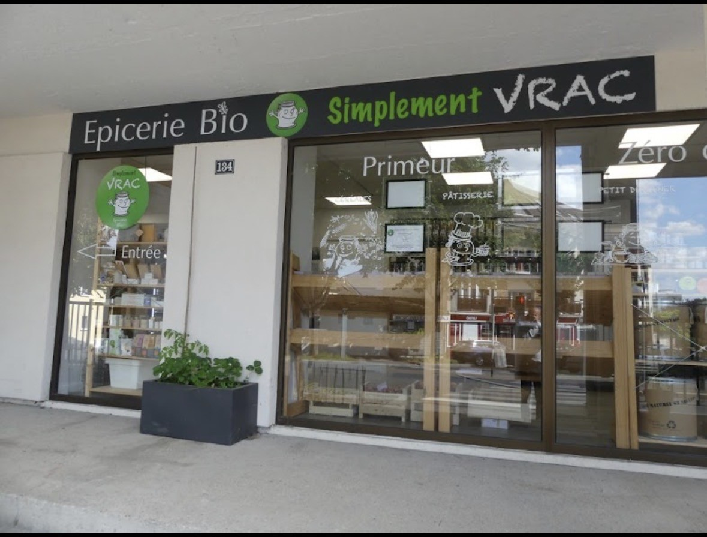

Cours de yoga à Noisy-le-Grand
Découvrez les cours de yoga douceur à Noisy-le-Grand avec Majoh Yoga. Chaque mercredi de 18h45 à 19h45, retrouvez Johanne chez Simplement Vrac, au 134 rue Pierre Brossolette. Une pratique douce et accessible à tous, sur tapis ou sur chaise.
Voir les horaires & tarifs
Le cours de yoga douceur
Un rendez-vous hebdomadaire d'une heure pour bouger, respirer et relâcher les tensions, dans un groupe de 10 personnes maximum.
Chaque mercredi
18h45 – 19h45
1 heure de pratique
Yoga douceur
Accessible à tous
Sur tapis ou sur chaise
10 personnes maximum
Petit groupe
Tapis non fournis
Vous préférez un autre lieu ? Découvrez le Studio Majoh à Gagny ou les cours de yoga en ligne.
Le yoga chez Simplement Vrac à Noisy-le-Grand
Les cours sont accueillis chez Simplement Vrac, au 134 rue Pierre Brossolette à Noisy-le-Grand.

Adresse
Simplement Vrac
134 rue Pierre Brossolette
93160 Noisy-le-Grand
- Ville : Noisy-le-Grand (93160)
- Lieu : Simplement Vrac
- Capacité : 10 personnes maximum par cours
- Matériel : tapis non fournis
Tarifs
Cours à l'unité
15 €
Une séance, sans engagement.
Valable 1 semaine.
Forfait annuel
480 €
40 cours · soit 12 € par cours
La formule pour pratiquer toute l'année.
Valable 1 an.
FAQ – Yoga à Noisy-le-Grand
Oui. Le yoga douceur est accessible à tous, y compris aux personnes qui débutent. La pratique peut également se faire sur chaise.
Les tapis ne sont pas fournis. Pensez donc à apporter votre propre tapis si vous souhaitez pratiquer au sol. Une pratique sur chaise est également possible.
Le cours est à 15 € à l'unité (valable 1 semaine). Le forfait annuel comprend 40 cours pour 480 €, soit 12 € par cours (valable 1 an).
Chaque mercredi de 18h45 à 19h45, chez Simplement Vrac, au 134 rue Pierre Brossolette à Noisy-le-Grand.
Réserver votre cours
Choisissez votre séance directement dans le calendrier ci-dessous.
Réserver mon cours